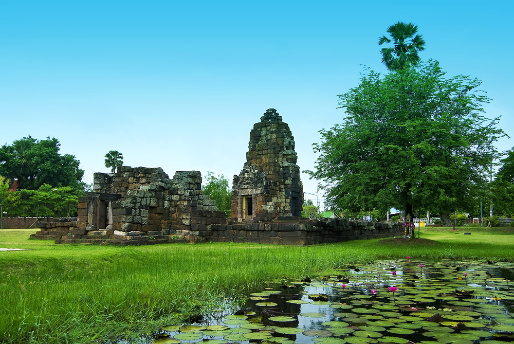

ปราสาทปรางค์กู่ ถือเป็นอโรคยศาลอีกแห่งหนึ่งซึ่งสร้างขึ้นในพุทธศตวรรษที่ 18 ในรัชกาลของพระเจ้าชัยวรมันที่ 7 โดยมีแผนผังตามแบบปกติของอโรคยศาล กล่าวคือ ประกอบด้วยปราสาทประธานที่มีมุขสั้นๆหันหน้าไปทางทิศตะวันออก ที่ด้านตะวันออกเฉียงใต้ของปราสาทประธานปรากฏบรรณาลัย ล้อมรอบด้วยกำแพงซึ่งมีดคปุระปรากฏเฉพาะด้านหน้า นอกกำแพงทางด้านทิศตะวันออกเฉียงเหนือปรากฏสระน้ำอยู่ ปราสาททั้งหมดสร้างด้วยศิลาแลง แต่ทับหลัง หน้าบันและเสากรอบประตูกลับใช้หินทรายและปรากฏภาพสลักอย่างงดงาม ภาพสลักบนหน้าบันของปราสาทประธานสลักภาพพระโพธิสัตว์อวโลกิเตสวร แต่ทับหลังสลักเป็นภาพพระพุทธรูป ส่วนหน้าบันของบรราลัยสลักภาพพุทธประวัติตอนเสด็จอกมหาภิเนษกรมณ์ การสลักรายละเอียดนี้ย่อมแสดงให้เห็นว่า ช่างผู้สร้างปรางค์กู่มีความตั้งใจในการตกแต่งรายละเอียดเป็นพิเศษ แตกต่างไปจากอโรคยศาลหลังอื่นที่มักไม่ปรากฏภาพสลักตกแต่งใดๆ สันนิษฐานว่า พระเจ้าชัยวรมันที่ 7 โปรดให้สร้างปรางค์กู่ขึ้นระหว่าง พ.ศ. 1728-1763 เพื่อ อุทิศแก่พระพุทธเจ้าไภษัชยคุรุ พระพุทธเจ้าแห่งการแพทย์ พร้อมด้วยพระโพธิสัตว์ 2 พระองค์ เพื่อประทานความไม่มีโรคภัยแก่ประชาชนของพระองค์